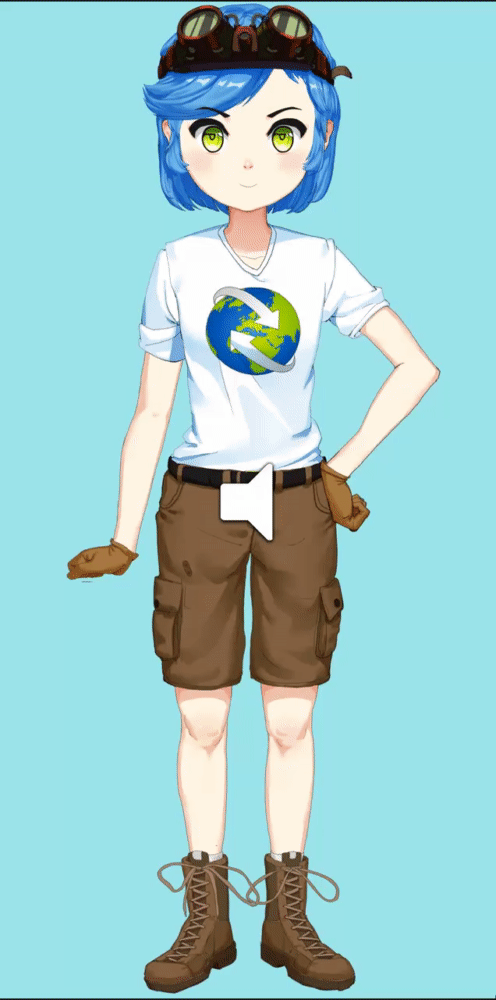

<div class="container">
    <div class="row" style="margin-top: 50px;">
        <div class="col-sm">
            <div class="mx-auto" style="width: 360px">
                <figure>
                    
                </figure>
            </div>
        </div>
        <div class="col-sm">
            <div class="mx-auto" style="width: 400px; text-align: left;">
                <h1>Cassia</h1>
                <h2>
                    Programmer
                    <br>
                    April 2018
                    <br>
                </h2>
                <p style="text-align: left">
                    Cassia is a desktop-based animated 2D socially interactive
                    agent designed to serve as an information kiosk for public
                    events. Users can interact with Cassia through a touch screen
                    and speech recognition.
                </p>
                <h4 style="text-align: left">Mission</h4>
                <p style="text-align: left">
                    After hosting quite a few public events on behalf of my
                    environmental nonprofit, Planet Save, I noticed that there
                    were a lot of visitors which my small team could not engage
                    with due to the sheer volume of people. This resulted in
                    many visitors leaving our booth prematurely without
                    having the chance to chat with us and learn about our
                    environmental projects. Cassia is designed to as an
                    educational and entertaining agent that visitors can interact
                    with so they can learn more about our projects and how they
                    can get involved while we are busy engaging with other visitors.
                    Overall, Cassia was much loved by our community and was a great
                    success for that year's community Earth Day event, retaining
                    visitor engagement for enough time for our team to speak with
                    most people!
                </p>
                <h4 style="text-align: left">Tools Used</h4>
                <ul style="text-align: left">
                    <li>
                        Unity
                    </li>
                    <li>
                        Animations generated from one still image using Live2D
                    </li>
                    <li>
                        Speech recognition handled by Windows Speech API
                    </li>
                </ul>
                <div style="margin-bottom: 2em;">
                    <a href="https://github.com/Spencer-L/Cassia" target="_blank">
                        
                    </a>
                </div>
            </div>
        </div>
    </div>
</div>